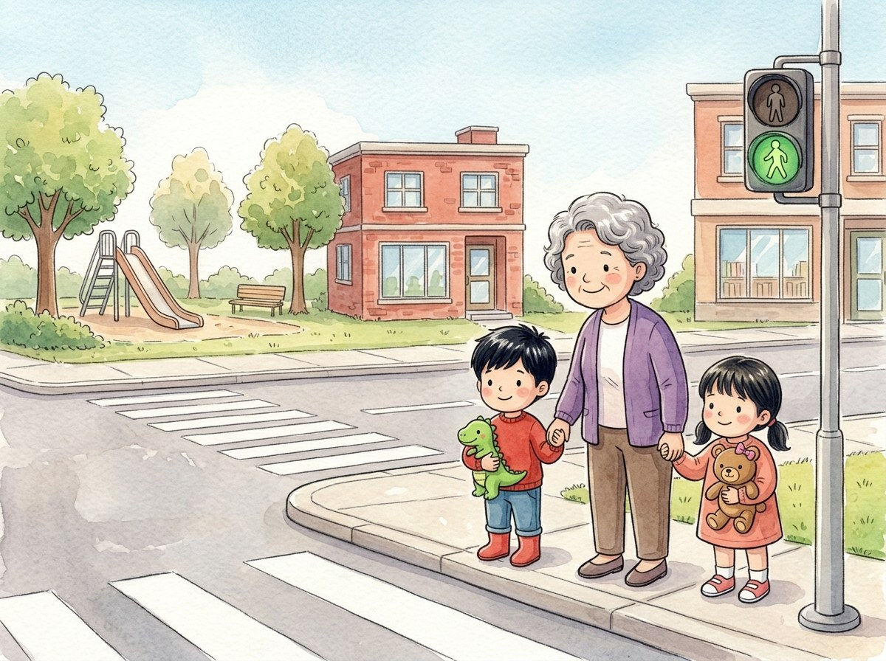

Kindergarten · Social studies · SS.K.CV.2
A Saturday with Grandma
A story about rules at the park, on the street and at the library.
Three new words
The light on the street that tells us when to stop and when to cross.
The time when it is your chance, after you wait.
A place with lots of books we can read and borrow.
Tap a picture to hear the word and what it means.
The story
On Saturday, Grandma takes Adrián and Génesis to the park and to the library.
To get there, they have to cross the street.
"We wait until the traffic light shows the little green person," says Grandma.
They hold hands, look both ways and cross together.
At the park, lots of children want to use the slide.
"We stand in line and wait for our turn," says Génesis.
Then they go into the library. There are books everywhere!
"Here we talk quietly, so everyone can read," Grandma whispers.
Adrián picks a book about dinosaurs. Of course!
At school, on the street and at the library, rules keep all of us safe.
Questions
Listen to the question and tap the right picture.
-
Question A. When do they cross the street?
They wait for the little green person on the traffic light and cross together.
-
Question B. What do they do to use the slide?
They stand in line and wait for their turn.
-
Question C. How do we talk in the library?
In the library we talk quietly so everyone can read.